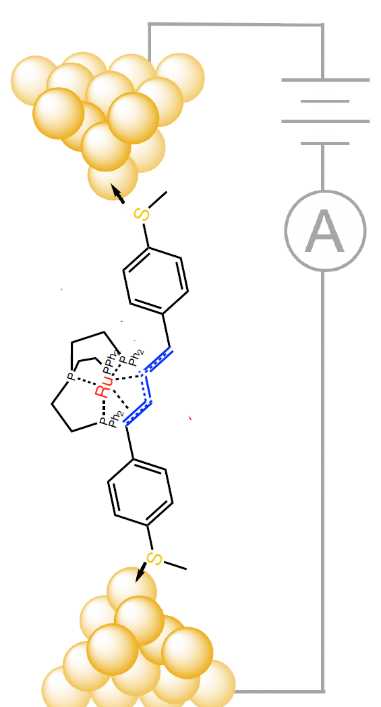
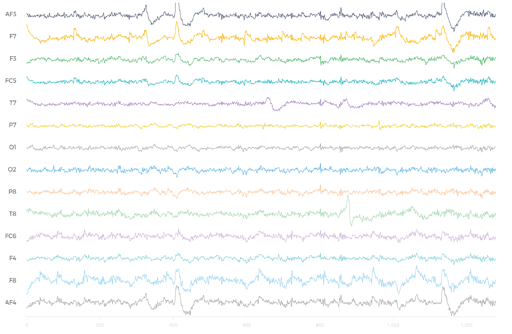
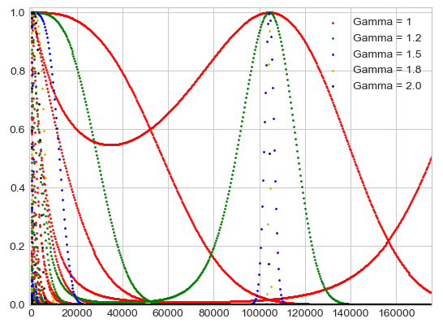

Publications/Presentations
[1] Chen, Sully F. & Pearse, Erin. P. J. “The irrationality measure of π as seen through the eyes of cos(n).” (2020). Elemente der Mathematik. Vol. 75 (4), pp. 152-165.
[2] Chen, Sully F. & Itti, Laurent. “Deep Mindread: Using a Low-Cost Commercial EEG to Classify Brain Activity.” (2019). Harvard National Collegiate Research Conference.
[3] Chen, Sully F.; Hernangómez Pérez, Daniel; Inkpen, Michael S. "In situ catalytic formation of conjugated organic wires." [Manuscript in progress, title subject to change]
Biomedical Optics: NIH - Tromberg Lab
September 2021 - Present
 This research is funded by the Postbaccalaureate Intramural Research Training Award given by the National
Institutes of Health to fund young researchers who have finished their undergraduate studies and are in the process
of applying to graduate school. I'm working with the Tromberg Lab on using near-infrared spectroscopy to correlate
outcomes in patients with various medical conditions. I work directly with pediatric patients and optical measurement
devices.
This research is funded by the Postbaccalaureate Intramural Research Training Award given by the National
Institutes of Health to fund young researchers who have finished their undergraduate studies and are in the process
of applying to graduate school. I'm working with the Tromberg Lab on using near-infrared spectroscopy to correlate
outcomes in patients with various medical conditions. I work directly with pediatric patients and optical measurement
devices.
Nanotechnology: USC Inkpen Lab
May 2019 - July 2021

My research project, under the instruction and guidance of Professor Michael S. Inkpen in the
Inkpen Lab, involves the synthesis of a
series of organic and organometallic molecules and subsequent exploration of their conductance at the single-molecule
scale using the scanning tunneling microscope-based break junction method.
Our key aim is to understand how the conductance of a simple conjugated organic ‘wire’ is modified
by an appended transition metal center. We call this modification approach ‘chemical gating’, by
analogy to the gate-modified current flow between source and drain terminals of a
transistor. Related concepts have been explored previously, in which redox-inactive organic
molecular wires were synthesized and measured. However, the charge transport process of
molecular wires with an appended metal site are considerably more complicated than that
of organic analogues, and in general there are insufficient data available for systems
containing metals. This project will provide useful new insights by exploring a novel family
of molecular electronic materials that is anticipated to exhibit unusual properties. For the work I have done with Prof. Inkpen,
I was awarded the 2019 and 2021 Provost Research Fellowship.
Computational Neuroscience: USC Viterbi iLabs
September 2018 - January 2019

Under the guidance of Professor Laurent Itti at the USC iLabs, I collected EEG data
and designed a deep convolutional neural network to model the data. Data was collected via the
Emotiv EPOC headset. We created a classification model which
achieves around 96% accuracy for binary classification of sleepy versus awake brain activity, and around 93% accuracy for classification between sleepy, leisure,
and focused brain activity. I was then invited to the Harvard National Collegiate Research Conference,
where I presented my research to a panel of judges and other students.
Pure Mathematics: The Irrationality Measure of π as seen through the eyes of cos(n)
March 2018 - July 2018

This research project was sparked from a question a graduate student proposed to my professor, Prof. Erin P.J. Pearse,
regarding the subsequence an = sin(n)n. The sine function is bound between 0 and 1, so one may
expect that this subsequence tends towards zero as n becomes large. Strikingly, this is not the case; values arbitrarily
close to one seem to appear forever throughout the sequence. Under the guidance of Prof. Pearse, I studied a similar, more general sequence:
an=cos(n)nγ, for varying values of γ. We proved that the limsup of this sequence
is closely related to the irrationality measure of π. In fact, for the set Φ = {γ ≥ 0 : limsup{|cos k|kγ}k ∈ ℕ = 1}
we find that sup Φ = 2μ(π) - 2, where μ(π) is the irrationality measure of π. We also provide further numerical evidence
that μ(π) = 2, as well as prove some fascinating facts about subsequences of an. We find that for γ < 2 μ(π) - 2, there exist
arithmetric progressions of arbitrary length whose values remain about α ∈ [0, 1). We prove certain bounds for the limsup of an under
various conditions. To see the full details of the paper, see the preprint as well as
the Medium article I wrote on the subject!